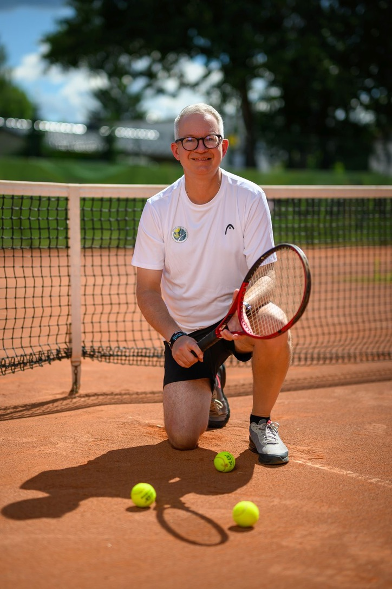

Neue Website, neue Möglichkeiten: Tennis-Schiri startet neu
Neuer Look, übersichtlicher Turnier- und Eventkalender, direkte Anmeldung zu Regelworkshops, Newsletter und WhatsApp-Community: Das ist neu auf tennis-schiri.de.
Bericht lesenTennisturniere entdecken, Regeln verstehen und Veranstaltungen professionell organisieren – mit Erfahrung, Leidenschaft und einem Blick fürs Detail.
Einträge bei 21 erfassten Turnierterminen.
“Pressure is a privilege.”
Neuer Look, übersichtlicher Turnier- und Eventkalender, direkte Anmeldung zu Regelworkshops, Newsletter und WhatsApp-Community: Das ist neu auf tennis-schiri.de.
Bericht lesenVon LK-Turnieren bis zu Ranglistenveranstaltungen: aktuelle Termine aus meinem Turnierkalender.
Zur vollständigen Übersicht ↗Tennis Center Bad Saarow
Regelfragen gemeinsam klären – mit Beispielen aus dem Tennisalltag.
Konkurrenzen für die drei SUNBALL-Turniere laut TVBB-Turnierkalender und für das Indoor-Mixed-Turnier laut tennis.de. Meldeschluss und Auslosung bitte in den offiziellen Turnierdetails kontrollieren; bei den übrigen Turnieren folgen die Angaben mit der Ausschreibung. Änderungen vorbehalten.
Praktische Unterstützung vor dem ersten Turnier und für jeden weiteren Spieltag.
Turnier auswählen, Packliste abhaken und eigene Zeiten notieren – ohne Anmeldung.
Die wichtigsten ITF-, DTB- und TVBB-Regelwerke durchsuchen, Regelfragen mit Quellen klären und Entscheidungen aus der Matchpraxis selbst prüfen.
Regelwerke & Fragen entdecken ↗Gut! Die Linie gehört zum Spielfeld. Selbst wenn der Ball sie nur am Rand berührt, ist er noch gut (ITF-Regel 12).
Diesen und weitere Regelfälle ansehen ↗Veranstalter und Vereine profitieren von Erfahrung, verlässlichen Abläufen und einem sicheren Umgang mit dem Regelwerk.
Strukturierte Vorbereitung und Begleitung von Turnieren – vom Zeitplan bis zur Durchführung.
Leistung anfragen ↗Klare Entscheidungen, Fairness und Regelkonformität bei Wettbewerben unterschiedlicher Formate.
Leistung anfragen ↗Praxisnahe Regelkenntnis für Spieler, Trainer, Vereinsmitglieder und Funktionäre.
Direkt anmelden ↗Tennisregeln aus der Praxis, verständlich erklärt und mit Raum für konkrete Fragen.
NTC 93
Hildesheimer Straße 11–13
15366 Neuenhagen bei Berlin
Turniermomente, Regelwissen und Neuigkeiten aus der Entwicklung von TENNILO – direkt aus unseren beiden Instagram-Profilen.
@tennis.schiri
Aktuelle Beiträge findest du auf Instagram. Die automatische Vorschau wird eingerichtet.
@tennis.schiri ansehen ↗@tennilo.app
Die aktuellen Neuigkeiten zur App findest du direkt bei Instagram. Die Vorschau wird eingerichtet.
@tennilo.app ansehen ↗Die Vorschaubilder werden auf unserer Website gespeichert. Erst beim Öffnen eines Beitrags gelangst du zu Instagram.
TENNILO bleibt die Dachmarke. Im Mittelpunkt steht aktuell TENNILO Score: eine Tennis-Zähl-App in Entwicklung, bei der Spielstände direkt auf der Apple Watch erfasst werden sollen. Das iPhone ergänzt das Bedienkonzept.
Geplanter Betatest: 27. Dezember 2026 beim LK-Turnier in Bad Saarow. Eine Apple Watch ist erforderlich; Teilnehmer erhalten die App bei Marktreife kostenlos. Coming Spring 2027.
Weitere TENNILO-Projekte: Tournament für die Organisation von Vereinsturnieren und Umpire für Schiedsrichter, einschließlich einer geplanten Anbindung externer Spielstandsanzeigen.
TENNILO Score entdeckenAktuelle Turniertermine, Ankündigungen und Hinweise aus Berlin & Brandenburg direkt über unsere WhatsApp-Turnier-Community.

Ich bin Michael Wiedeck. Seit mehr als drei Jahrzehnten ist Tennis ein fester Bestandteil meines Lebens. Als DTB-C-Stuhlschiedsrichter seit 1999 und DTB-B-Oberschiedsrichter seit 2016 begleite ich Turniere und Vereine – von LK-Events bis zu internationalen Wettbewerben.